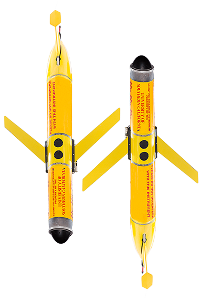

Slocum Glider
In collaboration with the Caron Lab and USCLab, RESL operates and maintains two Webb Slocum autonomous underwater gliders. An autonomous glider is a type of Autonomous Underwater Vehicle (AUV) designed for long-term ocean sampling and monitoring. These gliders fly through the water by altering the position of their center of mass and changing their buoyancy. Due to this method of locomotion, gliders are not fast moving AUVs, and generally have operational velocities on the same order of magnitude as oceanic currents (~1 km/h). By use of the buoyancy and gravity forces available in the ocean, a glider executes a sawtooth-shaped trajectory, and can stay out on deployment for up to four weeks.
In their current configuration, each glider continuously measures temperature, salinity and depth, as well as concentrations of chlorophyll-a, nitrates and phosphate. Data are transmitted to/from the gliders via Freewave radio modems or Iridium satellite modem. The gliders are primarily used as mobile sensors in a large-scale, embedded sensor network to study the Southern California coastal ocean, with an emphasis on the assessment and prediction of harmful algal blooms.


 Robotics and Autonmous Systems Center
Robotics and Autonmous Systems Center